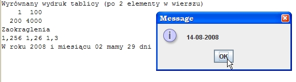

1. Formatowanie liczb i dat
Klasa java.utill.Formatter zapewnia mo¿liwoœci formatowania danych.
Tworz¹c formator (za pomoc¹ wywo³ania konstruktora) mo¿emy
okreœliæ:
- destynacjê formatowanych danych (dok¹d maj¹ byæ zapisane), któr¹ m.in.
mo¿e byæ String, StringBuffer, plik tekstowy,
- lokalizacjê
(ustawienia regionalne, reprezentowane przez obiekt
klasyLocale), wp³ywaj¹c¹ m.in. na reprezentacjê liczb i dat,
- stronê kodow¹ (do kodowania napisów) -
m.in. dla plików i Stringów
Uwaga: formatory dla plików powinny byæ po u¿yciu zamykane lub wymiatane
(close(), flush()),
co powoduje zamkniêcie lub wymiecenie buforów tych destynacji.
Formatowanie polega na wywo³aniu jednej z dwóch wersji metody format
(na rzecz fornatora):
Formatter
format(String format, Object... arg)
Formatter
format(Locale l, String format, Object... arg)
Druga z tych metod pozwala na podanie lokalizacji, m.in. wp³ywaj¹cej na sposób formatowania liczb.
£añcuch formatu (zmienna format) zawiera dowolne ci¹gi znaków oraz specjalne elementy
formatuj¹ce.
Dalej nastêpuj¹ dane do "wstawienia"
w ³añcuch formatu
w miejsce elementów formatu i do sformatowania pod³ug zasad okreœlanych przez te elementy
(zmienna
liczba argumentów dowolnego typu - formalnie Object). Dziêki
autoboxingowi
nie ma problemu z formatowaniem danych typów prostych.
Dla uproszczenia dostêpne s¹:
- statyczne metody format w
klasie String, pozwalaj¹ce na uzyskiwanie sformatowanych napisów,
- metody format i printf
(dzia³aj¹ce tak samo) w klasach PrintStream i PrintWriter,
wyprowadzaj¹ce sformatowane napisy "na wyjœcie" (np. na standardowe
wyjœcie lub do pliku).
Elementy formatu maj¹ nastêpuj¹c¹ ogóln¹ postaæ:
%[arg_ind$][flagi][szerokoϾ_pola][.precyzja]konwersja
gdzie:
- arg_ind$
- numer argumentu (z listy argumentów arg) do sformatowania przez dany
element; numeracja zaczyna siê od 1; poczynaj¹c od drugiego
elmentu formatu mo¿na w tym miejscu zastosowaæ znak < , co oznacza,
¿e dany element ma byæ zastosowany wobec argumentu uzytego w poprzednim
formatowaniu,
- flagi - znaki modyfikuj¹ce sposób formatowania (s¹ ró¿ne dla ró¿nych typów konwersji),
- szerokoœæ_pola - minimalna liczba znaków dla danego argumentu w wynikowym napisie,
- .precyzja
- liczba pokazywanych miejsc dziesiêtnych (dotyczy liczb rzeczywistych)
lub maksymalna liczba wyprowadzanych znaków (dotyczy np. napisów),
- konwersja
- okreœla jak ma byæ traktowany i formatowany odpowiadaj¹cy danemu
elementowi argument - np. jako liczba rzeczywista albo jako napis albo
jako data.
Uwaga: nawiasy kwadratowe oznaczaj¹ opcjonalnoœæ.
Symboli konwersji jest b. du¿o, dla ró¿nych symboli mog¹ byæ stosowane te¿ dodatkowe flagi.
Wszystko to jest opisane w sposób systematyczny w dokumentacji (proszê siêgaæ).
Tutaj przedstawione zostan¹ wybrane konwersje i flagi.
Wybrane konwersje - skrót
| Konwersja | Mo¿e byæ stosowana wobec | Wynik |
| s lub S | dowolnych danych | Je¿eli argument jest null - napis "null":
w przeciwym razie
je¿eli klasa arg na to zezwala
- wynik wywo³ania arg.formatTo(...)
w przeciwnym razie wynik wywo³ania arg.toString()
Uwaga: u¿ycie jako symbolu konwersji du¿ego S spowoduje zamianê liter napisu na du¿e. |
| c lub C | typów reprezentuj¹cych znaki Unicode | znak Unicode |
| d | typów reprezentuj¹cych liczby ca³kowite | liczba ca³kowita (dziesiêtna) |
| f | float, double, Float, Double, BigDecimal | liczba rzeczywista z separatorem miejsc dzisiêtnych |
| tH | danych reprezentuj¹cych czas, czyli:
long, Long, Calendar, Date | godzina na zegarze 24-godzinnym-2 cyfry (00-23) |
| tM | minuty - 2 cyfry (00 - 59) |
| tS | sekundy - 2 cyfry (00-60) |
| tY | rok - 4 cyfry (np. 2008) |
| tm | miesi¹c - 2 cyfry (01-12) |
| td | dzieñ miesi¹ca - 2 cyfry (01 -31) |
| tR | czas na zegarze 24 godzinnym sformatowany jako "%tH:%tM" |
| tT | czas na zegarze 24 godzinnym sformatowany jako "%tH:%tM:%tS" |
| tF | data sformatowana jako "%tY-%tm-%td" |
Wœród flag na szczególn¹ uwagê zas³uguj¹:
'-' - wynik wyrównany w polu do lewej (domyslnie jest wyrównany do prawej),
'+' - wynik zawiera zawsze znak (dla typów liczbowych),
' ' - wynik zawiera wiod¹ca spacjê dla argumentów nieujmenych (tylko dla typów liczbowych).
Zatem,
aby uzyskaæ sformatowane wyniki w poprzednim przyk³adowym programie
(liczbê z dwoma miejscami dziesiêtnymi, datê w postaci
rok-miesi¹c-dzieñ) mo¿emy napisaæ:
import java.util.*;
public class Format1 {
public static void main(String[] args) {
double cena = 1.52;
double ilosc = 3;
double koszt = cena * ilosc;
System.out.printf("Koszt wynosi %.2f z³", koszt);
System.out.printf("\nData: %tF", Calendar.getInstance());
}
}Wynik:
Koszt wynosi 4,56 z³
Data: 2008-08-14
Warto
tu zwróciæ uwagê na to, ¿e dla lokalizacji polskiej liczba pokazywana
jest z przecinkiem jako separatorem miejsc dziesiêtnych.
Aby uzyskac kropkê mo¿na napisaæ:
System.out.printf(Locale.ROOT, "Koszt wynosi %.2f z³", koszt);
W tym przypadku sta³a statyczna Locale.ROOT oznacza neutraln¹ lokalizacjê (bez wybranego kraju i jêzyka).
Kilka innych przyk³adów pokazuje program na wydruku.
import javax.swing.*;
public class Format2 {
public static void main(String[] args) {
System.out.println("Wyrównany wydruk tablicy (po 2 elementy w wierszu)");
int[] arr = { 1, 100, 200, 4000 };
int k = 1;
for (int i : arr) {
System.out.printf("%5d", i);
if (k%2 ==0) System.out.println();
k++;
}
// Zastosowanie znaku < (element formatu stosowany wobec argumentu z poprzedniego formatowania)
System.out.println("Zaokraglenia");
System.out.printf("%.3f %<.2f %<.1f", 1.256 );
// Znak < szczególnie przydatny w datach/czasie
Calendar c = Calendar.getInstance();
c.set(Calendar.MONTH, 1);
System.out.printf("\nW roku %tY i miesi¹cu %<tm mamy %d dni", c, c.getActualMaximum(Calendar.DATE) );
// Oczywiœcie mo¿emy formatowaæ do Stringów
String dateNow = String.format("%td-%<tm-%<tY", System.currentTimeMillis());
JOptionPane.showMessageDialog(null, dateNow);
}
}Wynik dzia³ania programu (konsolê i okno dialogowe) pokazuje rysunek.

2. Interfejs Formattable
Dla
symbolu konwersji s lub S je¿eli klasa drugiego argumentu metody format
na to pozwala, to do formatowania zostanie u¿yta metoda formatTo.
Jest
to mo¿liwe tylko wtedy gdy klasa argumentu "do sformatowania"
implementuje interfejs Formattable i definiuje jego jedyn¹ metodê:
public void formatTo(Formatter formatter, int flags, int width, int precision)
Jeœli teraz za pomoc¹ jakiegoœ formatora nastêpuje formatowanie obiektu z u¿yciem symbolu konwersji s lub S, to:
- wywo³ywana jest metoda formatTo z klasy obiektu,
- metodzie formatTo jest przekazywany formator (jako parametr formatter), flagi formatowania (parametr flags), szerokoϾ pola (parametr width) i precyzja (parametr precision),
- w
metodzie formatTo mo¿emy sprawdziæ wartoœci przekazanych informacji
(np. locale formatora, flagi, szerokoϾ precyzje) i na tej podstawie
podj¹æ odpowiednie dzia³ania przetwarzaj¹ce obiekt do
wynikowego napisu,
- przed zwróceniem sterowania z metody formatTo wywo³ujemy metodê format przekazanego formatora,
- sformatowany napis bêdzie przez formator zapisany do odpowiedniej destynacji (np. wyprowadzony na standardowe wyjœcie).
Sprawdziæ
jakich u¿yto flag formatowania mo¿emy za pomoc¹ porównywania ze sta³ymi
statycznymi klasy java.util.FormattableFlags. Dostêpne s¹ sta³e o
nastêpuj¹cych nazwach:
- ALTERNATE - oznacza, ¿e nale¿y u¿yæ alternatywnej formy sformatowania obiektu (w formacie u¿yto znaku #),
- LEFT_JUSTIFY - sformatowany napis bêdzie wyrównany w polu do lewej (w formacie u¿yto znaku -),
- UPPERCASE - zamiana liter na du¿e (u¿yto wielkiej litery w symbolu konwersji np. S, zamiast s).
Przyk³adowy
program pokazuje zastosowanie metody formatTo do ³atwej zmiany sposobu
wyprowadzania informacji o obiektach klasy Person. W trybie
normalnym wyprowadzane jest nazwisko, w trybie alternatywnym
(zastosowana flaga #) - nazwisko i imiê. W metodzie formatTo, na
podstawie przekazanych informacji wybieramy formê formatowania,i
budujemy napis formatu na podstawie przekazanej informacji, po czym za
jego pomoc¹ formatujemmy obiekt, u¿ywaj¹c przekazanego formatora.
import java.util.*;
import static java.util.FormattableFlags.*;
public class Person implements Formattable{
private String fname;
private String lname;
public Person(String fname, String lname) {
this.fname = fname;
this.lname = lname;
}
@Override
public void formatTo(Formatter formatter, int flags, int width, int precision) {
String txt = lname;
if ((flags & ALTERNATE) == ALTERNATE) txt += ' ' + fname;
String fs = "%";
if ((flags & LEFT_JUSTIFY) == LEFT_JUSTIFY) fs += '-';
if (width >= 0) fs += width;
if (precision >= 0) fs += "."+precision;
fs += ((flags & UPPERCASE) == UPPERCASE) ? "S" : "s";
formatter.format(fs, txt);
}
public static void main(String[] args) {
Person e = new Person("Jan", "Kowalski");
System.out.printf("%#s\n", e);
System.out.printf("%20s\n", e);
System.out.printf("%#30S\n", e);
System.out.printf("%#.10S\n", e);
}
}
Wynik dzia³ania programu:
Kowalski Jan
Kowalski
KOWALSKI JAN
KOWALSKI J